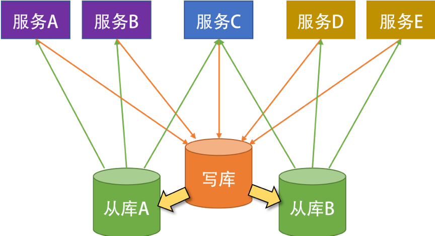
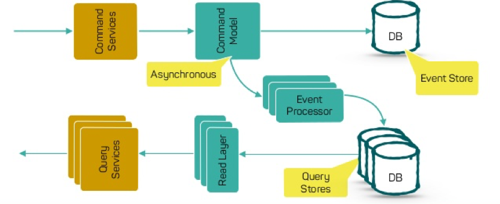
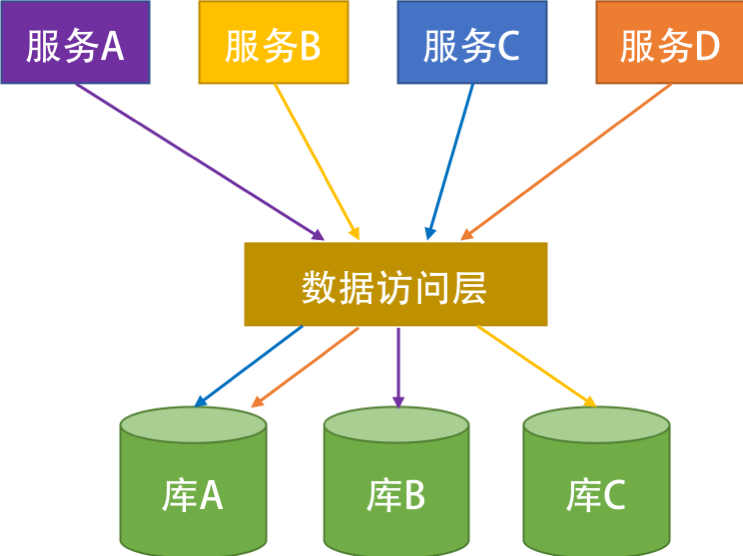

- 000 开篇词 洞悉技术的本质，享受科技的乐趣.md
- 001 程序员如何用技术变现（上）.md
- 002 程序员如何用技术变现（下）.md
- 003 Equifax信息泄露始末.md
- 004 从Equifax信息泄露看数据安全.md
- 005 何为技术领导力.md
- 006 如何拥有技术领导力.md
- 007 推荐阅读：每个程序员都该知道的事.md
- 008 Go语言，Docker和新技术.md
- 009 答疑解惑：渴望、热情和选择.md
- 010 如何成为一个大家愿意追随的Leader？.md
- 011 程序中的错误处理：错误返回码和异常捕捉.md
- 012 程序中的错误处理：异步编程和最佳实践.md
- 013 魔数 0x5f3759df.md
- 014 推荐阅读：机器学习101.md
- 015 时间管理：同扭曲时间的事儿抗争.md
- 016 时间管理：投资赚取时间.md
- 017 故障处理最佳实践：应对故障.md
- 018 故障处理最佳实践：故障改进.md
- 019 答疑解惑：我们应该能够识别的表象和本质.md
- 020 分布式系统架构的冰与火.md
- 021 从亚马逊的实践，谈分布式系统的难点.md
- 022 分布式系统的技术栈.md
- 023 分布式系统关键技术：全栈监控.md
- 024 分布式系统关键技术：服务调度.md
- 025 分布式系统关键技术：流量与数据调度.md
- 026 洞悉PaaS平台的本质.md
- 027 推荐阅读：分布式系统架构经典资料.md
- 028 编程范式游记（1）- 起源.md
- 029 编程范式游记（2）- 泛型编程.md
- 030 编程范式游记（3） - 类型系统和泛型的本质.md
- 031 Git协同工作流，你该怎样选.md
- 032 推荐阅读：分布式数据调度相关论文.md
- 033 编程范式游记（4）- 函数式编程.md
- 034 编程范式游记（5）- 修饰器模式.md
- 035 编程范式游记（6）- 面向对象编程.md
- 036 编程范式游记（7）- 基于原型的编程范式.md
- 037 编程范式游记（8）- Go 语言的委托模式.md
- 038 编程范式游记（9）- 编程的本质.md
- 039 编程范式游记（10）- 逻辑编程范式.md
- 040 编程范式游记（11）- 程序世界里的编程范式.md
- 041 弹力设计篇之“认识故障和弹力设计”.md
- 042 弹力设计篇之“隔离设计”.md
- 043 弹力设计篇之“异步通讯设计”.md
- 044 弹力设计篇之“幂等性设计”.md
- 045 弹力设计篇之“服务的状态”.md
- 046 弹力设计篇之“补偿事务”.md
- 047 弹力设计篇之“重试设计”.md
- 048 弹力设计篇之“熔断设计”.md
- 049 弹力设计篇之“限流设计”.md
- 050 弹力设计篇之“降级设计”.md
- 051 弹力设计篇之“弹力设计总结”.md
- 052 区块链技术 - 区块链的革命性及技术概要.md
- 053 区块链技术 - 区块链技术细节 - 哈希算法.md
- 054 区块链技术 - 区块链技术细节 - 加密和挖矿.md
- 055 区块链技术 - 去中心化的共识机制.md
- 056 区块链技术 - 智能合约.md
- 057 区块链技术 - 传统金融和虚拟货币.md
- 058 管理设计篇之分布式锁.md
- 059 管理设计篇之配置中心.md
- 060 管理设计篇之边车模式.md
- 061 管理设计篇之服务网格.md
- 062 管理设计篇之网关模式.md
- 063 管理设计篇之部署升级策略.md
- 064 性能设计篇之缓存.md
- 065 性能设计篇之异步处理.md
- 066 性能设计篇之数据库扩展.md
- 067 性能设计篇之秒杀.md
- 068 性能设计篇之边缘计算.md
- 069 程序员练级攻略（2018）：开篇词.md
- 070 程序员练级攻略（2018）：零基础启蒙.md
- 071 程序员练级攻略（2018）：正式入门.md
- 072 程序员练级攻略（2018）：程序员修养.md
- 073 程序员练级攻略（2018）：编程语言.md
- 074 程序员练级攻略：理论学科.md
- 075 程序员练级攻略（2018）：系统知识.md
- 076 程序员练级攻略（2018）：软件设计.md
- 077 程序员练级攻略（2018）：Linux系统、内存和网络.md
- 078 程序员练级攻略（2018）：异步IO模型和Lock-Free编程.md
- 079 程序员练级攻略（2018）：Java底层知识.md
- 080 程序员练级攻略（2018）：数据库.md
- 081 程序员练级攻略（2018）：分布式架构入门.md
- 082 程序员练级攻略（2018）：分布式架构经典图书和论文.md
- 083 程序员练级攻略（2018）：分布式架构工程设计.md
- 084 程序员练级攻略（2018）：微服务.md
- 085 程序员练级攻略（2018）：容器化和自动化运维.md
- 086 程序员练级攻略（2018）：机器学习和人工智能.md
- 087 程序员练级攻略（2018）：前端基础和底层原理.md
- 088 程序员练级攻略（2018）：前端性能优化和框架.md
- 089 程序员练级攻略（2018）：UIUX设计.md
- 090 程序员练级攻略（2018）：技术资源集散地.md
- 091 程序员面试攻略：面试前的准备.md
- 092 程序员面试攻略：面试中的技巧.md
- 093 程序员面试攻略：面试风格.md
- 094 程序员面试攻略：实力才是王中王.md
- 095 高效学习：端正学习态度.md
- 096 高效学习：源头、原理和知识地图.md
- 097 高效学习：深度，归纳和坚持实践.md
- 098 高效学习：如何学习和阅读代码.md
- 099 高效学习：面对枯燥和量大的知识.md
- 100 高效沟通：Talk和Code同等重要.md
- 101 高效沟通：沟通阻碍和应对方法.md
- 102 高效沟通：沟通方式及技巧.md
- 103 高效沟通：沟通技术.md
- 104 高效沟通：好老板要善于提问.md
- 105 高效沟通：好好说话的艺术.md
- 106 加餐 谈谈我的“三观”.md
- 107 结束语 业精于勤，行成于思.md
066 性能设计篇之数据库扩展
读写分离 CQRS
读写分离是数据库扩展最简单实用的玩法了，这种方法针对读多写少的业务场景还是很管用的，而且还可以有效地把业务做相应的隔离。
如下图所示，数据库只有一个写库，有两个读库，所有的服务都写一个数据库。对于读操作来说，服务 A 和服务 B 走从库 A，服务 D 和服务 E 走从库 B，服务 C 在从库 A 和从库 B 间做轮询。

这样的方法好处是：
- 比较容易实现。数据库的 master-slave 的配置和服务框架里的读写分离都比较成熟，应用起来也很快。
- 可以很好地把各个业务隔离开来。不会因为一个业务把数据库拖死而导致所有的业务都死掉。
- 可以很好地分担数据库的读负载，毕竟读操作是最耗数据库 CPU 的操作。
这样的方法不好的地方是：
- 写库有单点故障问题。如果是写库出了性能问题，那么所有的业务一样不可用。对于交易型的业务，要得到高的写操作速度，这样的方式不行。
- 数据库同步不实时，需要强一致性的读写操作还是需要落在写库上。
综上所述，一般来说，这样的玩法主要是为了减少读操作的压力。
当然，这样的读写分离看上去有点矬，那么，我们还是为之找一个更靠谱的设计——CQRS。关于 CQRS，我在这里只做一个简单的介绍，更多的细节你可以上网自行 Google。
CQRS 全称 Command and Query Responsibility Segregation，也就是命令与查询职责分离。其原理是，用户对于一个应用的操作可以分成两种，一种是 Command 也就是我们的写操作（增，删，改），另一种是 Query 操作（查），也就是读操作。Query 操作基本上是在做数据整合显现，而 Command 操作这边会有更重的业务逻辑。分离开这两种操作可以在语义上做好区分。
- 命令 Command 不会返回结果数据，只会返回执行状态，但会改变数据。
- 查询 Query 会返回结果数据，但是不会改变数据，对系统没有副作用。
这样一来，可以带来一些好处。
- 分工明确，可以负责不同的部分。
- 将业务上的命令和查询的职责分离，能够提高系统的性能、可扩展性和安全性。并且在系统的演化中能够保持高度的灵活性，能够防止出现 CRUD 模式中，对查询或者修改中的某一方进行改动，导致另一方出现问题的情况。
- 逻辑清晰，能够看到系统中的哪些行为或者操作导致了系统的状态变化。
- 可以从数据驱动（Data-Driven）转到任务驱动（Task-Driven）以及事件驱动。
如果把 Command 操作变成 Event Sourcing，那么只需要记录不可修改的事件，并通过回溯事件得到数据的状态。于是，我们可以把写操作给完全简化掉，也变成无状态的，这样可以大幅度降低整个系统的副作用，并可以得到更大的并发和性能。
文本中有 Event Sourcing 和 CQRS 的架构示意图。

图片来源 - CQRS and Event Sourcing Application with Cassandra
分库分表 Sharding
一般来说，影响数据库最大的性能问题有两个，一个是对数据库的操作，一个是数据库中数据的大小。
对于前者，我们需要从业务上来优化。一方面，简化业务，不要在数据库上做太多的关联查询，而对于一些更为复杂的用于做报表或是搜索的数据库操作，应该把其移到更适合的地方。比如，用 ElasticSearch 来做查询，用 Hadoop 或别的数据分析软件来做报表分析。
对于后者，如果数据库里的数据越来越多，那么也会影响我们的数据操作。而且，对于我们的分布式系统来说，后端服务都可以做成分布式的，而数据库最好也是可以拆开成分布式的。读写分离也因为数据库里的数据太多而变慢，于是，分库分表就成了我们必须用的手段。

上面的图片是一个分库的示例。其中有两个事，这里需要提一下，一个是关于分库的策略，一个是关于数据访问层的中间件。
关于分库的策略。我们把数据库按某种规则分成了三个库。比如，或是按地理位置，或是按日期，或是按某个范围分，或是按一种哈希散列算法。总之，我们把数据分到了三个库中。
关于数据访问层。为了不让我们前面的服务感知到数据库的变化，我们需要引入一个叫 " 数据访问层 " 的中间件，用来做数据路由。但是，老实说，这个数据访问层的中间件很不好写，其中要有解析 SQL 语句的能力，还要根据解析好的 SQL 语句来做路由。但即便是这样，也有很多麻烦事。
比如，我要做一个分页功能，需要读一组顺序的数据，或是需要做 Max/Min/Count 这样的操作。于是，你要到三个库中分别求值，然后在数据访问层这里再合计处理返回。但即使是这样，你也会遇到各种令人烦恼的事，比如一个跨库的事务，你需要走 XA 这样的两阶段提交的操作，这样会把数据库的性能降到最低的。
为了避免数据访问层的麻烦，分片策略一般如下。
- 按多租户的方式。用租户 ID 来分，这样可以把租户隔离开来。比如：一个电商平台的商家中心可以按商家的 ID 来分。
- 按数据的种类来分。比如，一个电商平台的商品库可以按类目来分，或是商家按地域来分。
- 通过范围来分。这样分片，可以保证在同一分片中的数据是连续的，于是我们数据库操作，比如分页查询会更高效一些。一般来说，大多数情况是用时间来分片的，比如，一个电商平台的订单中心是按月份来分表的，这样可以快速检索和统计一段连续的数据。
- 通过哈希散列算法来分（比如：主键 id % 3 之类的算法。）此策略的目的是降低形成热点的可能性（接收不成比例的负载的分片）。但是，这会带来两个问题，一个就是前面所说的跨库跨表的查询和事务问题，另一个就是如果要扩容需要重新哈希部分或全部数据。
上面是最常见的分片模式，但是你还应考虑应用程序的业务要求及其数据使用模式。这里请注意几个非常关键的事宜。
- 数据库分片必须考虑业务，从业务的角度入手，而不是从技术的角度入手，如果你不清楚业务，那么无法做出好的分片策略。
- 请只考虑业务分片。请不要走哈希散列的分片方式，除非有个人拿着把刀把你逼到墙角，你马上就有生命危险，你才能走哈希散列的分片方式。
数据库扩展的设计重点
先说明一下，这里没有讲真正数据库引擎的水平扩展的方法，我们只是在业务层上谈了一下数据扩展的两种方法。关于数据库引擎的水平扩展，你可能看一下我之前发过的《分布式数据调度的相关论文》一文中的 AWS Aurora 和 Google Spanner 的相关论文中提到的那些方法。
接下来，我们说一下从业务层上把单体的数据库给拆解掉的相关重点。
首先，你需要把数据库和应用服务一同拆开。也就是说，一个服务一个库，这就是微服务的玩法，也是 Amazon 的服务化的玩法——服务之间只能通过服务接口通讯，不能通过访问对方的数据库。在 Amazon 内，每个服务都会有一个自己的数据库，比如地址库、银行卡库等。这样一来，你的数据库就会被 " 天生地 " 给拆成服务化的，而不是一个单体的库。
我们要知道，在一个单体的库上做读写分离或是做分片都是一件治标不治本的事，真正治本的方法就是要和服务一起拆解。
当数据库也服务化后，我们才会在这个小的服务数据库上进行读写分离或分片的方式来获得更多的性能和吞吐量。这是整个设计模式的原则——先做服务化拆分，再做分片。
对于分片来说，有两种分片模式，一种是水平分片，一种是垂直分片。水平分片就是我们之前说的那种分片。而垂直分片是把一张表中的一些字段放到一张表中，另一些字段放到另一张表中。垂直分片主要是把一些经常修改的数据和不经常修改的数据给分离开来，这样在修改某个字段的数据时，不会导致其它字段的数据被锁而影响性能。比如，对于电商系统来说，商品的描述信息不常改，但是商品的库存和价格经常改，所以，可以把描述信息和库存价格分成两张表，这样可以让商品的描述信息的查询更快。
我们所说的 sharding 更多的是说水平分片。水平分片需要有以下一些注意事项。
- 随着数据库中数据的变化，我们有可能需要定期重新平衡分片，以保证均匀分布并降低形成热点的可能性。 但是，重新平衡是一项昂贵的操作。 若要减少重新平衡的频率，我们需要通过确保每个分片包含足够的可用空间来处理未来一段时间的变化。 另外，我们还需要开发用于快速重新平衡分片的工具和脚本。
- 分片是静态的，而数据的访问则是不可预期的，可能会需要经常性地调整我们的分片，这样一来成本太高。所以，我们最好使用一个索引表的方式来进行分片。也就是说，把我们数据的索引动态地记录在一个索引表中。这样一来，我们就可以非常灵活地调度我们的数据了。当数据调度到另一台结点上时，我们只需要去索引表里改一下这个数据的位置就好了。
- 如果程序必须要从多个分片检索数据的查询，则可以使用并行任务从各个分片上提取此数据，然后聚合到单个结果中。 但是，此方法不可避免地会在一定程度上增加解决方案数据访问逻辑的复杂性。
- 数据分片后，我们很难在分片之间保持引用完整性和一致性，也就是所谓的跨分片的事务，因此应尽量减少会影响多个分片中的数据的操作。如果应用程序必须跨分片修改数据，那么我们需要评估一致性以及评估是否采用两阶段提交的方式。
- 配置和管理大量分片可能是一个挑战。在做相应的变更时，一定要先从生产线上拉出数据，然后根据数据计划好新的分片方式，并做好相当的测试工作。否则，这个事出了问题会是一个灾难性的问题。
小结
好了，我们来总结一下今天分享的主要内容。首先，我介绍了单主库多从库的读写分离，并进一步用 CQRS 把语义区分成命令和查询。命令的执行可以变成事件溯源方式，从而得到更大的并发和性能。随后我讲了分库分表的策略及其数据访问层所做的抽象。最后，我指出了数据库扩展的设计重点。下篇文章中，我们讲述秒杀。希望对你有帮助。
也欢迎你分享一下你的数据库做过哪些形式的扩展？设计中有哪些方面的考量？